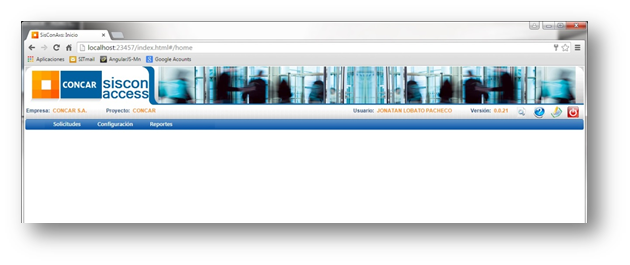
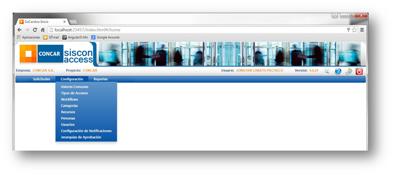

SIT CONSULTING SAC
Sistema de Control de Accesos - Concar
Manual de Usuario
|
Name |
Description |
|
Concar, como parte del Grupo GyM está sujeto a la observancia de la Lay Sarbanex-Oaxley o SOX.
La Ley Sarbanes-Oaxley de 2002 (SOX) tiene como finalidad salvaguardar los intereses de los accionistas en empresas públicas, estableciendo un conjunto de regulaciones, responsabilidades y penalidades para asegurar la veracidad y exactitud de la información financiera que estas empresas proporcionan. | |
|
El Sistema de Control de Accesos es un aplicativo web que permite registrar y gestionar todos los eventos relacionados con las altas, bajas y modificaciones de accesos de usuario a los diferentes activos tecnológicos de la empresa, incluyendo:
El Aplicativo permite a los usuarios registrados en el sistema a emitir solicitudes de acceso por alta o baja y llevar el seguimiento del proceso hasta su culminación. | |
|
Abra Cualquier navegador:
• De acuerdo a su perfil aparecerán sus respectivas opciones. Las opciones que se muestran a continuación son todas las existentes en el sistema.  | |
|
En esta opción se puede visualizar las opciones asociadas a la emisión, aprobación y consulta de Solicitudes de Acceso.
| |
|
En esta opción se puede visualizar las posibles configuraciones a realizar, además de encontrarse las tablas maestras del sistema. Tenga en cuenta que solo un administrador tiene acceso a esta opción.  | |
|
En esta opción se puede visualizar la opción “Ver Reporte”, donde se apreciara los dos reportes solicitados.
|
|
Copyright (c) 2015. All rights reserved.
|
|
What do you think about this topic? Send feedback!
|